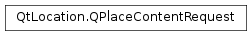

QPlaceContentRequest¶
Synopsis¶
Functions¶
- def
__eq__(other) - def
__ne__(other) - def
clear() - def
contentContext() - def
limit() - def
placeId() - def
setContentContext(context) - def
setLimit(limit) - def
setPlaceId(identifier)
Detailed Description¶
The
PySide2.QtLocation.QPlaceContentRequestclass represents the parameters of a content request.The
PySide2.QtLocation.QPlaceContentRequestclass is used in conjunction with aPySide2.QtLocation.QPlaceManagerto retrieve rich content like images and reviews in a paginated fashion. The following code would request a set of 5 images from the 10th index:QPlaceContentRequest request; request.setContentType(QPlaceContent::ImageType); request.setPlaceId(place.placeId()); request.setLimit(5); QPlaceContentReply *contentReply = manager->getPlaceContent(request); //..connect signals..// ... ... void contentHandler() { if (contentReply->error() == QPlaceReply::NoError) { place.insertContent(contentReply->request().contentType(), contentReply->content()); } }
-
class
PySide2.QtLocation.QPlaceContentRequest¶ -
class
PySide2.QtLocation.QPlaceContentRequest(other) Parameters: other – PySide2.QtLocation.QPlaceContentRequestConstructs a new request object.
Constructs a copy of
other.
-
PySide2.QtLocation.QPlaceContentRequest.clear()¶ Clears the content request.
-
PySide2.QtLocation.QPlaceContentRequest.contentContext()¶ Return type: object Returns backend specific additional content context associated with this place content request.
-
PySide2.QtLocation.QPlaceContentRequest.limit()¶ Return type: PySide2.QtCore.intReturns the maximum number of content items to retrieve.
A negative value for limit means that it is undefined. It is left up to the backend provider to choose an appropriate number of items to return.
The default limit is -1.
-
PySide2.QtLocation.QPlaceContentRequest.__ne__(other)¶ Parameters: other – PySide2.QtLocation.QPlaceContentRequestReturn type: PySide2.QtCore.boolReturns true if
otheris not equal to this content request, otherwise returns false.
-
PySide2.QtLocation.QPlaceContentRequest.__eq__(other)¶ Parameters: other – PySide2.QtLocation.QPlaceContentRequestReturn type: PySide2.QtCore.boolReturns true if
otheris equal to this content request, otherwise returns false.
-
PySide2.QtLocation.QPlaceContentRequest.placeId()¶ Return type: unicode Returns the identifier of the place content is to be fetched for.
-
PySide2.QtLocation.QPlaceContentRequest.setContentContext(context)¶ Parameters: context – object Sets the content context to
context.Note
This method is intended to be used by geo service plugins when returning place content results.
The content context is used by backends to store additional content context related to the content request. Other relevant fields should also be filled in. For example, if the content request is for image content the content type should also be set with
setContentType(). The content context allows additional context to be kept which is not directly accessible via the Qt Location API.The content context can be of any type storable in a
PySide2.QtCore.QVariant. The value of the content context is not intended to be used directly by applications.
-
PySide2.QtLocation.QPlaceContentRequest.setLimit(limit)¶ Parameters: limit – PySide2.QtCore.intSet the maximum number of content items to retrieve to
limit.
-
PySide2.QtLocation.QPlaceContentRequest.setPlaceId(identifier)¶ Parameters: identifier – unicode Sets the identifier of the place to fetch content for to
identifier.
© 2018 The Qt Company Ltd. Documentation contributions included herein are the copyrights of their respective owners. The documentation provided herein is licensed under the terms of the GNU Free Documentation License version 1.3 as published by the Free Software Foundation. Qt and respective logos are trademarks of The Qt Company Ltd. in Finland and/or other countries worldwide. All other trademarks are property of their respective owners.